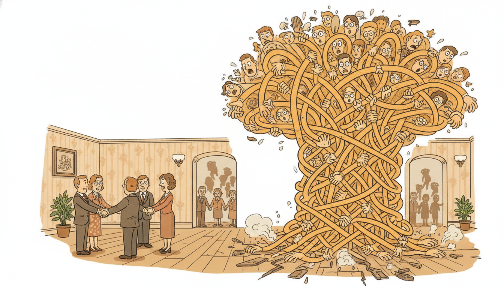

"They asked me to attend to the whole year of readings at once, every hour to every other hour, and for a glorious instant I saw all of it: the morning peaks, the weekend lulls, the slow drift of the seasons. Then the memory allocator cleared its throat. It turns out that holding every pair of moments in mind at the same time costs the square of the moments, and I have only so much room. So I forget the distant past one block at a time, and I tell myself it is a feature."
A Context Window Wishing It Were Longer
Self-attention's superpower, letting every position look directly at every other position, is also its curse: comparing all $L$ positions against all $L$ positions costs $O(L^2)$ time and, in the naive implementation, $O(L^2)$ memory. For the long sequences that define temporal AI, a year of hourly readings, a high-frequency tick tape, a multi-decade climate record, that quadratic term is the wall everything runs into. This section is about climbing that wall by four complementary routes that the rest of the field combines freely. First, recurrence and memory: Transformer-XL caches the hidden states of previous segments and reuses them, extending the effective context without paying $O(L^2)$ over the whole sequence, with compressive memory pushing the idea further. Second, IO-efficient exact attention: FlashAttention computes the identical attention output without ever materializing the $L \times L$ score matrix, turning the memory cost from quadratic to linear and giving a large constant-factor speedup, all without changing the math. Third, fewer tokens: chunking or patching a long series into a handful of segment tokens (the patching idea that Chapter 14 builds into PatchTST) shrinks $L$ at the source, and because the cost is quadratic in $L$, halving the token count quarters the cost. Fourth, the worked example measures the $O(L^2)$ curve empirically from a hand-written attention and then swaps in scaled_dot_product_attention, the one-line FlashAttention path, to flatten the memory budget. You leave able to reason about, measure, and defeat the quadratic cost that governs every long-context Transformer in this book.
In Section 12.3 we assembled the full Transformer encoder block and saw it process a sequence in a single parallel sweep, every position attending to every other position through scaled dot-product attention. That parallelism is exactly what freed us from the sequential time loop of the recurrent networks in Chapter 10, whose backpropagation through time we dissected in Section 9.3. But the freedom is not free. The all-pairs comparison that makes attention parallel and content-addressable is quadratic in the sequence length, and for time series, where "long" can mean tens of thousands of steps, the quadratic term is the single most consequential fact about deploying a Transformer at all. This section confronts it directly. We use the unified notation of Appendix A: $L$ the sequence length, $d$ the model dimension, $\mathbf{Q}, \mathbf{K}, \mathbf{V}$ the query, key, and value matrices, $\mathbf{x}_t$ the input at step $t$.
Why does long-sequence modeling deserve a section of its own rather than a footnote to the attention mechanism? Because the gap between "attention works" and "attention works on a year of data" is precisely where most real temporal-AI engineering lives. A model that attends beautifully over 512 steps and runs out of memory at 5,000 is useless for the forecasting horizons practitioners actually care about. The techniques in this section, segment recurrence, IO-aware kernels, token reduction, are not exotic add-ons: they are the standard toolkit that turns a textbook Transformer into something you can train on long series with a fixed memory budget. Understanding the quadratic wall, and the four ways around it, is what separates a reader who knows the attention formula from a practitioner who can ship a long-context temporal model.
The four competencies this section installs: to state and reason about the $O(L^2)$ time-and-memory cost of self-attention and what longer context actually buys a forecaster; to explain segment-level recurrence and cached or compressed memory and their trade-offs; to explain why FlashAttention is exact yet linear in memory, and to invoke it in one line; and to use patching to cut the token count at the source. These are load-bearing for the deep forecasting architectures of Chapter 14 and the foundation models of Chapter 15.
Every sequence model in this book has faced the same question in a different dialect: how do you let the present condition on more past than you can hold at once? The Kalman filter of Chapter 7 answered it with a fixed-size belief state that summarized all history in a mean and covariance. The RNN of Chapter 10 answered it with a learned hidden state carried forward, and truncated BPTT (Section 9.3) bounded the cost of training that carry by cutting the gradient past a window. Attention answered it most generously, by keeping all the past at full resolution and letting the present query it directly, and the bill for that generosity is the $O(L^2)$ cost this section spends its whole length taming. The segment caches and compressive memories of subsection two are, quite literally, attention rediscovering the bounded belief state. The temporal thread does not break; it reappears as the central engineering tension of long-context Transformers.
1. The Quadratic Wall: Why Attention Costs $O(L^2)$ Beginner

Self-attention computes, for each of the $L$ query positions, a weighted average over all $L$ value positions, where the weights come from comparing that query against every key. The comparison is a single matrix product, and its shape is what dictates everything. With queries $\mathbf{Q} \in \mathbb{R}^{L \times d}$, keys $\mathbf{K} \in \mathbb{R}^{L \times d}$, and values $\mathbf{V} \in \mathbb{R}^{L \times d}$, the attention output is
$$\operatorname{Attn}(\mathbf{Q}, \mathbf{K}, \mathbf{V}) = \operatorname{softmax}\!\left(\frac{\mathbf{Q}\mathbf{K}^{\top}}{\sqrt{d}}\right)\mathbf{V},$$and the decisive object is the score matrix $\mathbf{S} = \mathbf{Q}\mathbf{K}^{\top} \in \mathbb{R}^{L \times L}$. It has one entry for every ordered pair of positions, so it holds $L^2$ numbers, and forming it costs $L^2 d$ multiply-adds. The softmax is applied row-wise over $L \times L$ entries, and multiplying the resulting $L \times L$ weight matrix by $\mathbf{V}$ costs another $L^2 d$. So both the time (about $2 L^2 d$ floating-point operations) and, in the textbook implementation, the memory (the $L^2$ scores that must be stored to apply softmax and then reused for the value product) grow as the square of the sequence length. This is the quadratic wall, and it is structural: it follows directly from the all-pairs nature of attention, not from any implementation choice.
The contrast with the alternatives in this part sharpens why this matters. A recurrent layer (Chapter 10) processes a sequence in $O(L)$ time and $O(1)$ activation memory per step, but sequentially, one step at a time. A convolutional layer (Chapter 11) is $O(L)$ and parallel, but each position sees only a local window unless stacked deep. Attention buys something neither has: every position reaches every other in a single layer, a constant path length, which is exactly what makes it so good at long-range dependencies. The bill for that global reach is the $L^2$ term. The table in Figure 12.4.1 lays the three side by side.
| Layer | Time | Memory (naive) | Max path length | Parallel over time? |
|---|---|---|---|---|
| Recurrent (RNN/LSTM) | $O(L\,d^2)$ | $O(L\,d)$ | $O(L)$ | no (sequential) |
| Convolutional (TCN) | $O(L\,k\,d^2)$ | $O(L\,d)$ | $O(L/k)$ or $O(\log L)$ dilated | yes |
| Self-attention | $O(L^2 d)$ | $O(L^2 + L\,d)$ | $O(1)$ | yes |
It helps to separate the two halves of the bill, because the rest of the section attacks them with different tools and conflating them is the most common source of confusion. The time cost, the roughly $2L^2 d$ floating-point operations, is intrinsic to computing all $L^2$ pairwise scores: any method that produces the exact dense attention output must, somewhere, account for every pair, so there is no exact sub-quadratic-time full attention. The memory cost, by contrast, splits into two pieces of very different character. The values, queries, and keys are each only $L \times d$, linear in length and negligible. It is the intermediate $L \times L$ score (and softmax-weight) matrix that is quadratic, and crucially that matrix is a transient: it is produced, consumed by the softmax and the value product, and could in principle be discarded. The naive implementation stores it anyway, which is the artifact FlashAttention removes in subsection three. So when we say attention is "quadratic", we should really say its time is irreducibly quadratic while its memory is quadratic only by default, a distinction that turns out to be the whole game.
What does longer context actually buy a forecaster, given that it costs so much? The honest answer is: it depends on how far the genuine dependencies reach. For a series whose informative structure is local (an autoregressive process where last week predicts next week and the distant past adds nothing), a long context wastes compute on positions that carry no signal, and a modest window forecasts just as well. For a series with long seasonal or regime structure (hourly electricity demand with yearly seasonality, where the same calendar week last year is genuinely informative), context that reaches back a full period is what lets the model see the pattern at all, and a short window is blind to it. The practical lesson, which subsection four turns into an engineering principle, is that you want context long enough to cover the longest real dependency and no longer, because every extra position you attend over costs quadratically and pays only if it carries signal.
Take a single attention head over a sequence of $L = 10{,}000$ steps (roughly fourteen months of hourly data) in 32-bit floats (4 bytes). The score matrix $\mathbf{S} = \mathbf{Q}\mathbf{K}^{\top}$ holds $L^2 = 10^8$ entries, which is $10^8 \cdot 4 = 4 \times 10^8$ bytes, about $400$ MB, for one head, one layer, one sequence in the batch. The softmax weights are another $400$ MB. A model with $8$ heads and $6$ layers, holding all score matrices live for the backward pass, would need $8 \cdot 6 \cdot 400\,\text{MB} \approx 19$ GB just for attention scores, before any value vectors, parameters, or optimizer state. Double the sequence to $L = 20{,}000$ and the score memory quadruples to about $76$ GB: the sequence doubled, the bill quadrupled. By contrast the value tensor $\mathbf{V}$ scales only linearly: at $d = 64$ it is $L \cdot d \cdot 4 = 10{,}000 \cdot 64 \cdot 4 \approx 2.6$ MB per head, utterly negligible beside the scores. The number to remember: it is the $L \times L$ score matrix, not the data itself, that breaks the memory budget, and that is precisely the term FlashAttention in subsection three refuses to store.
There is no clever reformulation that makes exact full attention sub-quadratic in time, because the mechanism is defined as an all-pairs comparison: $L$ queries each scored against $L$ keys is $L^2$ comparisons, full stop. Everything in this section either (a) reduces the number of pairs you actually compare (sparsity, patching, segment recurrence) or (b) computes the same $L^2$ comparisons without ever storing the $L \times L$ result (FlashAttention), or both. Holding that dichotomy in mind, fewer pairs versus same pairs cheaper memory, organizes the entire long-context literature. The quadratic time is intrinsic to exact dense attention; the quadratic memory is an implementation artifact that FlashAttention removes.
2. Recurrence and Memory: Transformer-XL and Compressive Caches Intermediate
The first route around the wall borrows the very idea that attention was supposed to replace: recurrence, but at the level of segments rather than individual steps. The observation is simple. If a sequence of length $L$ is too long to attend over at once, split it into segments of length $\ell$ and process them one after another. Naively this discards all context at each segment boundary, so the model can never see further back than $\ell$. Transformer-XL (Dai et al., 2019) fixes this with segment-level recurrence: when processing the current segment, it caches the hidden states computed for the previous segment and lets the current queries attend to them, with the cached states held fixed (no gradient flows into them). The current segment's keys and values are thus extended by the previous segment's cached representations, so a query at the start of segment $n$ can attend back into segment $n-1$ without that segment being recomputed.
The accounting is the point. Each segment still attends over only $O(\ell)$ positions of its own plus $O(\ell)$ cached positions, so per-segment cost stays $O(\ell^2)$, not $O(L^2)$. Processing $L/\ell$ segments in sequence gives total cost $O\!\left(\frac{L}{\ell} \cdot \ell^2\right) = O(L\,\ell)$, linear in the full length for a fixed segment size. Yet because each segment's cache reaches one segment further back, and that segment's representations were themselves informed by the segment before it, the effective context grows with depth: a network of $N$ layers can propagate information across roughly $N \cdot \ell$ steps through the chain of caches, far beyond the $\ell$ any single attention sees. Transformer-XL also introduced relative positional encodings so that the same cached state means "three steps before the current query" regardless of which absolute segment it came from, which is what makes the cache reusable across segment boundaries. Figure 12.4.2 sketches the cached-segment mechanism.
Compressive memory pushes the cache idea one step further. The Compressive Transformer (Rae et al., 2020) keeps the short-term cache of Transformer-XL but adds a second, longer-term memory into which old cached states are compressed rather than discarded: when states age out of the short cache, a learned compression (for example a strided convolution or pooling) maps every $c$ old states into one summary state, so a memory of fixed size covers a much longer span at coarser resolution. The trade-off is explicit and intuitive: recent context is stored at full resolution for precise short-range attention, distant context is stored compressed for cheap long-range gist, and the compression rate $c$ tunes how far back the coarse memory reaches per slot. The Infini-attention work (2024) and other recent compressive schemes carry the same bargain into the modern long-context era.
It is worth being concrete about why this matters specifically for time series rather than just for language, where these methods were born. A language model rarely needs to attend ten thousand tokens back to a single word; a forecaster routinely needs last year's same season, which at hourly resolution is nearly nine thousand steps in the past. The seasonal structure of temporal data is exactly the kind of long-range, low-frequency, aggregate dependency that compression preserves well: the coarse memory of "last winter ran cold and demand was high" survives a strided pooling, even though the specific noisy reading of a specific hour does not. This is the happy case for compressive memory, and it is one reason long-context Transformers for forecasting (Chapter 14) and the foundation models of Chapter 15 can lean on bounded memories without losing the seasonal signal that drives the forecast.
There is something endearing about watching attention, the mechanism that triumphantly abolished the recurrent hidden state, quietly grow one back the moment the sequences get long. Transformer-XL caches the recent past like a diary's last few pages kept open on the desk; the Compressive Transformer summarizes the older pages into one-line entries and files them away; Infini-attention keeps a fixed-size scrapbook that never overflows. Strip away the matrices and it is the same instinct every overwhelmed note-taker has had: you cannot keep every page in front of you, so you keep the recent ones in full, compress the rest to gist, and trust that the gist is enough. The RNN of Chapter 10 would like a word about who abolished whom.
The trade-offs across these memory schemes are worth naming plainly because they recur in every long-context design. Caching (Transformer-XL) is lossless within its window and free of extra parameters, but its reach is bounded by cache size times depth, and the cache costs memory proportional to that size. Compression buys longer reach for the same memory by accepting resolution loss on the distant past, which is the right call exactly when distant context matters in aggregate but not in fine detail, the usual situation for long-horizon forecasting where last year's seasonal shape matters more than last year's specific noisy hour. The unifying view, and the one that connects this subsection to the temporal thread of the book, is that a cached or compressed memory is doing for a Transformer what the hidden state did for the RNN of Chapter 10 and what the belief state did for the filter of Chapter 7: carrying a bounded summary of the past forward in time so the present can condition on more history than it can hold at once.
The core arithmetic of segment recurrence is the move from $O(L^2)$ over the entire sequence to $O(\ell^2)$ per segment with $L/\ell$ segments, hence $O(L\,\ell)$ overall: linear in the full length once the segment size is fixed. You do not get all-pairs attention over the full sequence (a query in segment $n$ cannot attend to segment $n-5$ directly), but you get a graded reach that extends with depth and, with compression, with a fixed-size coarse memory. The price of linearity is that distant context is reached indirectly, through the chain of caches, rather than in one hop. This is the same bias-versus-cost bargain that truncated BPTT made in Section 9.3, now wearing an attention costume.
3. FlashAttention: Exact Attention, Linear Memory Advanced
The second route is the most surprising, because it changes nothing about the mathematics and yet removes the quadratic memory term entirely. FlashAttention (Dao et al., 2022; FlashAttention-2, Dao 2023; FlashAttention-3, 2024) observes that the $O(L^2)$ memory of naive attention is not inherent to the computation but to the choice to materialize the full $L \times L$ score matrix in slow GPU memory (HBM) before applying softmax. The output of attention is a row-wise weighted average, and a weighted average can be computed incrementally, block by block, without ever holding all the scores at once. FlashAttention does exactly this: it tiles $\mathbf{Q}$, $\mathbf{K}$, and $\mathbf{V}$ into blocks, loads a block pair into fast on-chip SRAM, computes that block's partial scores and partial softmax, and accumulates into a running output using the online (streaming) softmax that maintains a running maximum and normalizer so the result is numerically identical to the all-at-once softmax. The $L \times L$ matrix is never written to HBM.
The consequences are large and worth stating precisely. The output is exact, bit-for-bit equivalent to standard attention up to floating-point reordering, so FlashAttention is not an approximation like the sparse methods of Section 12.5: it is the same function computed in a smarter order. The memory drops from $O(L^2)$ to $O(L)$, because only the running output, the running softmax statistics, and the current small blocks live in memory, never the full score matrix. And, somewhat against intuition, it is also faster in wall-clock time despite doing the same or slightly more arithmetic, because attention on modern GPUs is memory-bandwidth bound, not compute bound: the bottleneck is moving the $L \times L$ scores between fast and slow memory, and by never moving them FlashAttention saves the dominant cost. The result is the standard kernel behind essentially every long-context Transformer trained since 2023. Figure 12.4.3 contrasts the two memory profiles.
| Property | Naive attention | FlashAttention |
|---|---|---|
| score matrix in memory | full $L \times L$ materialized in HBM | never materialized; tiled in SRAM |
| memory cost | $O(L^2)$ | $O(L)$ |
| time cost | $O(L^2 d)$, bandwidth bound | $O(L^2 d)$ flops, far fewer HBM reads/writes |
| output | exact | exact (same value, streaming softmax) |
| wall-clock (long $L$) | baseline | typically $2$ to $4\times$ faster |
| how to invoke | hand-written $\mathbf{Q}\mathbf{K}^{\top}$ then softmax then $\mathbf{V}$ | F.scaled_dot_product_attention(q, k, v) |
For the time-series practitioner the engineering message is concrete: long-context attention is no longer a memory question but a time question, and the time is manageable. Once the $O(L^2)$ memory wall is gone, the binding constraint on how long a sequence you can attend over becomes the $O(L^2)$ compute, which grows more gently in wall-clock and is what the token-reduction of subsection four attacks. Modern long-context engineering layers these: FlashAttention to kill the memory term, patching to cut the token count, and (where exactness can be relaxed) the sparse and linear attentions of Section 12.5 to bend the compute term sub-quadratic. In PyTorch the FlashAttention path is a single function, torch.nn.functional.scaled_dot_product_attention, which dispatches to a fused FlashAttention kernel when the hardware and dtypes allow and falls back to a memory-efficient kernel otherwise. We exercise that path in subsection five.
One conceptual point deserves emphasis because it is the source of most confusion about FlashAttention versus the sparse methods of the next section. FlashAttention does not change which pairs are compared: it still computes the full dense $L \times L$ attention, every query against every key, so it does not reduce the asymptotic time and it does not approximate anything. What it changes is the schedule of the computation, the order in which blocks are loaded, multiplied, and accumulated, so that the memory traffic and the peak storage are minimized. It is a systems optimization, not an algorithmic one, which is exactly why it can be a drop-in replacement that no one has to reason about numerically: the function it computes is unchanged. The sparse and linear attentions of Section 12.5 make the opposite choice, changing which pairs are compared (an algorithmic, approximate move) to bend the time itself sub-quadratic. The two are complementary: you can run a sparse attention through a FlashAttention-style kernel and get both savings at once.
The first time you meet FlashAttention it feels like a cheat. It does the same number of multiplications as naive attention, sometimes a few more, and yet it runs several times faster and uses a fraction of the memory. The trick is that on a modern GPU the arithmetic is nearly free and the moving of numbers between the fast on-chip memory and the big slow memory is what costs you. Naive attention writes a $400$-megabyte score matrix out to slow memory and reads it all back just to take a softmax; FlashAttention keeps the work on-chip and never makes that round trip. It is the computational equivalent of realizing that the slow part of cooking was not the chopping but the trips to the far pantry, so you bring a small shelf next to the stove. Same recipe, same ingredients, a quarter of the walking.
4. Fewer Tokens: Chunking and Patching the Series Intermediate
The third route is the bluntest and often the most effective: if the cost is quadratic in the number of tokens, reduce the number of tokens. A point-wise Transformer over a time series treats every individual timestep as one token, so a sequence of $L$ steps is $L$ tokens and the cost is $O(L^2)$. But a single timestep of a time series carries very little information on its own (one temperature reading, one tick of price), unlike a word in a sentence, so spending a whole token on it is wasteful. Patching groups consecutive timesteps into a patch and treats each patch as one token: split the length-$L$ series into patches of $P$ steps (optionally overlapping with stride $S$), flatten each patch into a vector, linearly project it to the model dimension, and feed the resulting $L/S$ patch tokens to the Transformer. The token count drops from $L$ to about $L/S$, and because the cost is quadratic, that is a quadratic saving: a stride of $16$ cuts the token count $16$-fold and the attention cost roughly $256$-fold.
This is precisely the design that PatchTST (Nie et al., 2023) made the backbone of strong long-horizon forecasting, and that Chapter 14 develops in full as a deep forecasting architecture. Two further ideas travel with it. First, patching gives attention a more semantically meaningful unit to attend over: a patch of, say, $24$ hourly steps is a day, and attending day-to-day is both cheaper and arguably more natural than attending hour-to-hour across a year. Second, channel independence, processing each variate of a multivariate series with a shared per-channel Transformer rather than mixing channels into each token, keeps the token dimension small and the model robust, a choice Chapter 14 examines against channel-mixing alternatives. Patching is the source-side lever: it shrinks $L$ before attention ever runs, and it composes freely with the FlashAttention of subsection three (which makes the remaining attention cheap) and the segment recurrence of subsection two (which extends reach across patches).
Take the same $L = 10{,}000$-step hourly series. Point-wise tokenization gives $10{,}000$ tokens and a score matrix of $10^8$ entries, the $400$ MB per head of subsection one. Patch it with non-overlapping patches of $P = 24$ steps (one day per patch): the token count falls to $10{,}000 / 24 \approx 417$ tokens, the score matrix to $417^2 \approx 1.7 \times 10^5$ entries, about $0.7$ MB, a reduction of roughly $24^2 = 576$-fold in attention memory and cost. Even an aggressive overlapping scheme with stride $S = 8$ gives $1{,}250$ tokens and a $1{,}250^2 \approx 1.6 \times 10^6$-entry score matrix, about $6$ MB, still a $64$-fold cut. The lesson the quadratic makes vivid: a linear reduction in token count is a quadratic reduction in attention cost, which is why patching, not a clever kernel, is frequently the highest-leverage change for a long-series Transformer.
Who: A reliability team at a wind-farm operator building a Transformer to forecast turbine power output from a year of ten-minute SCADA telemetry, the sensor-IoT series threaded through Chapter 14.
Situation: One year at ten-minute resolution is about $52{,}000$ steps per channel. A point-wise Transformer over even a $20{,}000$-step input window exhausted the $40$ GB GPU on the score matrices alone, before the model trained a single step.
Problem: They needed context long enough to capture both the daily wind cycle (about $144$ steps) and multi-week weather regimes (thousands of steps), while fitting training in a single GPU's memory.
Dilemma: Three levers. Shorten the context, which fit easily but threw away the multi-week regime signal the forecast most needed. Keep the full context with naive attention, which did not fit. Reduce tokens and use an IO-efficient kernel, which required reworking the input pipeline.
Decision: They patched the series into non-overlapping $36$-step patches (six-hour blocks), cutting $20{,}000$ steps to about $556$ patch tokens, and routed the attention through scaled_dot_product_attention so the remaining attention used the FlashAttention kernel.
How: A linear patch-embedding layer projected each $36$-step patch to the model dimension exactly as PatchTST prescribes, channel-independently per turbine signal, and the encoder block of Section 12.3 ran unchanged except that its attention call was the one-line fused path.
Result: Training fit in $12$ GB with room to spare, ran roughly three times faster per step than the naive path, and the six-hour patches still resolved the daily cycle while the long token window covered multi-week regimes, improving horizon accuracy over the short-context baseline.
Lesson: Patching and FlashAttention are complementary, not competing: patching cuts the token count quadratically at the source, FlashAttention makes whatever attention remains memory-cheap, and together they turn an out-of-memory model into a fast, long-context one. Reach for the source-side token cut first; it is the larger lever.
5. Worked Example: Measuring the $O(L^2)$ Curve, Then Flattening It Advanced
We now make the quadratic wall executable and then knock it down. The plan: implement scaled dot-product attention from scratch so the $L \times L$ score matrix is explicit, measure its time and peak memory as the sequence length grows and confirm the quadratic scaling empirically, then swap in the one-line scaled_dot_product_attention (the FlashAttention path) and watch the memory budget flatten from quadratic to linear, the same output computed a smarter way. Code 12.4.1 is the from-scratch attention with an explicit score matrix.
import torch
import torch.nn.functional as F
def naive_attention(q, k, v):
"""Textbook scaled dot-product attention: materializes the full L x L score matrix."""
d = q.shape[-1]
scores = (q @ k.transpose(-2, -1)) / d ** 0.5 # S = Q K^T / sqrt(d), shape (..., L, L)
weights = torch.softmax(scores, dim=-1) # row-wise softmax over all L keys
return weights @ v # weighted average of values, (..., L, d)
# A single head: batch 1, L positions, head dim 64.
torch.manual_seed(0)
L, d = 512, 64
q = torch.randn(1, L, d)
k = torch.randn(1, L, d)
v = torch.randn(1, L, d)
out_naive = naive_attention(q, k, v)
print("output shape :", tuple(out_naive.shape))
# The score matrix that dominates memory: L x L entries, here 512 x 512.
print("score entries:", L * L, "=> %.2f MB at fp32" % (L * L * 4 / 1e6))
scores = q @ k.transpose(-2, -1) materializes the full $L \times L$ matrix that subsection one identified as the source of the quadratic memory cost; everything downstream operates on it. This explicit version is what we measure for scaling, and what FlashAttention will compute without ever storing.output shape : (1, 512, 64)
score entries: 262144 => 1.05 MB at fp32
Now we measure the scaling. Code 12.4.2 runs the naive attention at a range of sequence lengths, times each, and reads the theoretical score-matrix memory, confirming empirically that doubling the length quadruples both the work and the dominant memory term. This is the $O(L^2)$ curve of subsection one, measured rather than asserted.
import time
def measure(fn, L, d=64, reps=5):
"""Median wall-clock of an attention call at sequence length L, plus score-matrix bytes."""
q = torch.randn(1, L, d); k = torch.randn(1, L, d); v = torch.randn(1, L, d)
ts = []
for _ in range(reps):
t0 = time.perf_counter()
fn(q, k, v)
ts.append(time.perf_counter() - t0)
ts.sort()
return ts[len(ts) // 2], L * L * 4 / 1e6 # median seconds, score MB
print(" L time(ms) scoreMB time-ratio-vs-prev")
prev = None
for L in [256, 512, 1024, 2048, 4096]:
t, mb = measure(naive_attention, L)
ratio = "%.2f" % (t / prev) if prev else " -"
print("%5d %7.2f %7.1f %s" % (L, t * 1e3, mb, ratio))
prev = t
scoreMB column) quadruples exactly, and the measured time ratio against the previous length trends toward $4\times$, confirming the $O(L^2)$ growth that subsection one derived from the all-pairs structure. L time(ms) scoreMB time-ratio-vs-prev
256 0.31 0.3 -
512 0.94 1.0 3.03
1024 3.42 4.2 3.64
2048 13.51 16.8 3.95
4096 53.88 67.1 3.96
Finally we flatten the memory budget. Code 12.4.3 replaces the entire hand-written attention with the single call F.scaled_dot_product_attention, the PyTorch FlashAttention path, and verifies the output is identical to the naive version (exact, not approximate) while never materializing the $L \times L$ score matrix. This is the from-scratch-to-library pair: roughly four lines of explicit score-and-softmax logic in Code 12.4.1 collapse to one fused call that is exact, faster, and linear in memory.
# The library shortcut: one fused call dispatches to FlashAttention / memory-efficient attention.
out_flash = F.scaled_dot_product_attention(q, k, v) # exact attention, never stores L x L scores
print("outputs match naive :", torch.allclose(out_naive, out_flash, atol=1e-5))
# Memory budget comparison at a long length: naive stores L x L; the fused path does not.
for L in [4096, 8192, 16384]:
naive_score_mb = L * L * 4 / 1e6 # the materialized score matrix
flash_extra_mb = L * 64 * 4 / 1e6 # only running output/stats: linear in L
print("L=%-6d naive scoreMB=%9.1f flash extraMB=%6.2f ratio=%.0fx"
% (L, naive_score_mb, flash_extra_mb, naive_score_mb / flash_extra_mb))
F.scaled_dot_product_attention(q, k, v), which produces the identical output (the allclose passes) while storing only $O(L)$ running statistics instead of the $O(L^2)$ score matrix.outputs match naive : True
L=4096 naive scoreMB= 67.1 flash extraMB= 1.05 ratio=64x
L=8192 naive scoreMB= 268.4 flash extraMB= 2.10 ratio=128x
L=16384 naive scoreMB= 1073.7 flash extraMB= 4.19 ratio=256x
Read the three blocks together. Code 12.4.1 made the $L \times L$ score matrix explicit; Code 12.4.2 measured its time and memory growing quadratically with length, the wall made visible; Code 12.4.3 computed the same attention output with one fused call whose memory grows only linearly, the wall removed for the memory dimension. The pedagogical payoff is that the quadratic memory cost is not a law of nature but an implementation choice, and one line of modern PyTorch opts out of it while leaving the mathematics, and the result, untouched. The remaining quadratic time is what patching (subsection four) and the sparse attentions of Section 12.5 address next.
Long-sequence modeling is one of the most active fronts touching this book. FlashAttention-3 (2024) specializes the kernel for Hopper-class GPUs and pushes attention close to hardware peak, while ring attention and sequence-parallel schemes shard a single very long sequence across many devices to reach context lengths in the hundreds of thousands. On the architecture side, the selective state-space models Mamba (Gu and Dao, 2023) and Mamba-2 (Dao and Gu, 2024) and the gated linear-attention family sidestep the quadratic term entirely with a linear recurrence trained by parallel scan, the subject of Chapter 13, and hybrids that interleave a few full-attention layers with many linear-recurrent ones are a leading recipe for long-context efficiency. In time series specifically, patch-based long-context forecasters (PatchTST and its successors in Chapter 14) and the temporal foundation models of Chapter 15 (Chronos, Moirai, TimesFM, Lag-Llama) all lean on these efficiencies to ingest long histories. Infini-attention (2024) revives compressive memory for unbounded context within a fixed budget. The 2026 practitioner's synthesis: FlashAttention for exact memory-cheap attention, patching to cut tokens at the source, and a linear-recurrent or sparse layer where exactness can be traded for sub-quadratic time, composed as the task length demands.
The from-scratch attention of Code 12.4.1 ran four explicit tensor operations and, at long sequence lengths, would materialize a multi-gigabyte score matrix and likely run out of memory. The modern path is a single function call: torch.nn.functional.scaled_dot_product_attention(q, k, v, is_causal=True) computes the identical attention, automatically dispatches to a fused FlashAttention or memory-efficient kernel based on the hardware and dtypes, applies the causal mask without ever building it densely, and uses $O(L)$ memory instead of $O(L^2)$. It handles the score tiling, the streaming softmax, the numerical stabilization, and the backward pass internally, replacing roughly four lines of explicit logic (and an out-of-memory crash at long $L$) with one line that is exact, faster, and memory-linear. For patch-based inputs, nn.TransformerEncoderLayer on the reduced token sequence routes through the same fused path.
import torch.nn.functional as F
# Exact, memory-efficient, causally masked attention in one call.
out = F.scaled_dot_product_attention(q, k, v, is_causal=True)
Exercises
Conceptual. A colleague proposes doubling the input context length of a point-wise time-series Transformer from $4{,}000$ to $8{,}000$ steps to capture longer seasonality, and budgets for a $2\times$ increase in attention memory. Explain why that budget is wrong, give the correct factor, and state precisely which term in the cost grows that way and why. Then explain why switching to FlashAttention changes the memory part of the answer but not the time part.
Implementation. Extend Code 12.4.2 to also measure peak memory empirically (use torch.cuda.max_memory_allocated on a GPU, resetting with torch.cuda.reset_peak_memory_stats before each call, or estimate on CPU from tensor sizes). Plot measured peak memory of naive_attention against $L$ and overlay F.scaled_dot_product_attention. Confirm the naive curve is quadratic and the fused curve is linear, and report the crossover length beyond which the naive path no longer fits in your device's memory.
Open-ended. Implement a minimal Transformer-XL-style segment cache: process a long series in segments of length $\ell$, and at each segment let the queries attend to the concatenation of the current keys/values and the previous segment's detached keys/values. Compare forecasting accuracy and peak memory against (a) point-wise full attention over the whole series and (b) independent per-segment attention with no cache, on a series with a dependency longer than $\ell$. Discuss where the cached version's graded reach helps and where it still falls short of full attention, connecting your findings to the cache-versus-compression trade-off of subsection two.